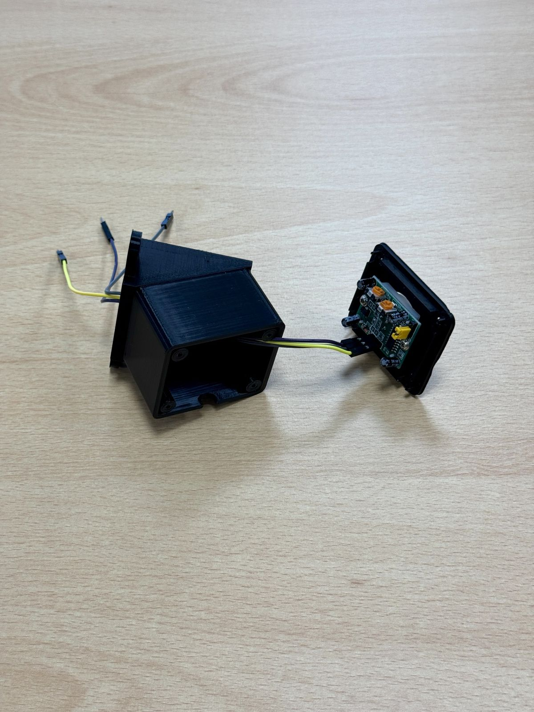

Projekt GAS
Mini-Sicherheitssystem für eine Tür
auf dem Arduino Uno
GruppeJan und Hugo
KlasseAIFS51, Lernfeld 7
SchuleBBZ Dithmarschen
Ablauf
1Idee und FunktionJan4 min
2Aufbau und CodeHugo, Jan9 min
3HerausforderungenJan, Hugo5 min
4FazitHugo2 min
5Live-Demobeide3 min
Ein Raum, den nicht jeder betreten soll
- Lager- oder Serverraum
- Beim Gehen scharf, beim Kommen unscharf
- PIN oder RFID-Karte an der Tür
- Bewegung im Raum: lauter Alarm
- Nur Bauteile aus der Schule
Anforderungen
Muss
- PIN und #: scharf, unscharf
- PIN nur als
*sichtbar - Alarm nur, wenn scharf
- Sirene laut, 30 s
- Heller Ton richtig, rauer Ton falsch
- 3 Fehlversuche: Alarm
- Herz unscharf, Totenkopf scharf
Kann
| Anforderung | Idee von |
|---|---|
| RFID-Karte | uns |
| 10 s Ausgangsverzögerung | Claude Code |
| Karten am Gerät anlernen | Lehrkraft |
| RFID-Reset | Lehrkraft |
| 3D-gedrucktes Gehäuse | uns |
| 3D-Modell im Browser | uns |
13 von 13 umgesetzt
Zwei Gehäuse, eine Wand
- Bedienteil außen neben der Tür
- Sensorteil innen, auf 60°-Keil
- PIN-Eingabe draußen: kein Alarm
Fünf Zustände
UnscharfHerz
Ausgangsverzögerung10 s, Piep pro Sekunde
ScharfTotenkopf, Melder aktiv
AlarmSirene 30 s, blinkt
Admin-MenüKarten verwalten
Symbole und Töne
| Ereignis | Display | Ton |
|---|---|---|
| Taste | * | Klick |
| PIN richtig | neues Symbol | hell, doppelt |
| PIN falsch | Kreuz | Brummen, 2 s |
| Verzögerung | Countdown | Piep pro Sekunde |
| Alarm | blinkt | Sirene |
Bauteile
- Arduino Uno R3, 2 KB SRAM
- Keypad 4x4
- OLED 1,3", SH1106
- RFID-Leser RC522, 3,3 V
- Bewegungsmelder HC-SR501
- Passiver Buzzer
- Mini-Breadboard, 9-V-Block
Pin-Zuordnung
| Bauteil | Pins | Bus |
|---|---|---|
| Keypad | D2 bis D9 | Matrix |
| OLED | A4, A5 | I²C, fest |
| RC522 | D11, D12, D13 | SPI, fest |
| RC522 | A0, A1, 3,3 V | SS, RST |
| Melder, Buzzer | A2, D10 | digital |
- Frei: nur A3, D0/D1

Stromversorgung
- 9-V-Block an VIN, im Gehäuse
- VIN ohne Verpolungsschutz
- Laufzeit geschätzt: 3 bis 5 h
- Vorführung über USB
| Spalte | Netz | für |
|---|---|---|
| 13 | +5 V | OLED, Buzzer, Melder |
| 15 | GND | alle Massen |
| 17 | +9 V | Batterie zu VIN |
Der echte Aufbau


Gehäuse
- 5 Druckteile, PLA, OpenSCAD
- Bedienteil: alle Module außer Melder
- RFID liest durch 2,4 mm Kunststoff
- Sensorteil: 60°-Keil, 3-adriges Kabel
Sourcecode
| Sketch | Zweck |
|---|---|
alarm_system | Firmware, gut 1000 Zeilen |
hardware_test | alle Bauteile einzeln |
display_test | nur OLED |
rfid_test | nur RC522 |
- Komplett im Repository, Ordner
Code/ - SH110X, GFX, MFRC522, EEPROM
Nichts darf blockieren
void loop() {
if (state == STATE_ADMIN) {
handleAdminKeypad();
handleAdminRfid();
} else {
handleKeypad();
handleRfid();
}
handleMotion();
updateState();
updateSound();
updateDisplay();
}
- Kein
delay(), Zeiten mitmillis() - Jede Funktion kehrt sofort zurück
Zustandsautomat
void setState(SystemState next) {
state = next;
stateStart = millis(); // when this state began
}
void updateState() {
unsigned long now = millis();
// ... exit delay: same pattern
if (state == STATE_ALARM) {
if (now - stateStart >= ALARM_MS) {
stopSound();
setState(STATE_ARMED); // stay armed
}
}
}
- Nach dem Alarm: wieder scharf
Zugriff erlaubt oder verweigert
void accessDenied(const __FlashStringHelper *reason) {
if (state == STATE_ALARM) {
stateStart = millis(); // restart the 30 s
return; // no error tone
}
wrongTries++;
if (wrongTries >= MAX_WRONG_TRIES) {
wrongTries = 0;
triggerAlarm(reason);
} else {
startSound(SOUND_ERROR);
}
}
- Gegenstück:
accessGranted() - PIN und Karte: dieselben Funktionen
Töne ohne Warten
case SOUND_ALARM: {
unsigned long phase = t % 500UL; // 500 ms
unsigned long step = (phase % 250UL) / 10UL; // 0..24
int freq = (phase < 250UL) ? (2500 + (int)step * 50)
: (3700 - (int)step * 50);
setFreq(freq);
break;
}
- Fehlerton: 95 und 135 Hz, 2 s
Tastenfeld selbst abfragen
char scanKeypad() {
char found = 0;
for (byte c = 0; c < 4 && found == 0; c++) {
pinMode(COL_PINS[c], OUTPUT);
delayMicroseconds(5);
for (byte r = 0; r < 4; r++) {
if (digitalRead(ROW_PINS[r]) == LOW) {
found = pgm_read_byte(&KEYS[r][c]);
break;
}
}
pinMode(COL_PINS[c], INPUT);
}
return found;
}
- Spalte auf LOW, Reihen lesen
- Keypad-Library hätte 120 Byte gekostet
Bewegung erkennen
void handleMotion() {
bool motion = (digitalRead(MOTION_PIN) == HIGH);
// rising edge only
if (motion && !lastMotion && state == STATE_ARMED) {
triggerAlarm(F("motion detected"));
}
lastMotion = motion;
}
- Nur Wechsel LOW auf HIGH
- Nur im Zustand scharf
Karten lesen und speichern
bool readNewCardUid() {
if (!rfidOk || millis() - lastRfidPoll < RFID_POLL_MS) {
return false; // only every 200 ms
}
lastRfidPoll = millis();
if (!mfrc522.PICC_IsNewCardPresent() ||
!mfrc522.PICC_ReadCardSerial()) {
return false;
}
mfrc522.PICC_HaltA(); // send the card to sleep
return true;
}
| EEPROM | Inhalt |
|---|---|
| 0 | Kennbyte 0xA5 |
| 1 | Anzahl, max. 8 |
| ab 2 | 4 Byte pro Karte |
Admin-Menü
- A, Admin-PIN, #
- 1 Karte anlernen
- 2 Liste, D löscht
- * zurück
- Ohne PC, direkt am Gerät
- Höchstens 8 Karten
Der Weg
Sept.Firmware: Display leer, Neustarts
Sept.RFID: Pin-Konflikt D11
23.09.Gehäuse: wohin mit dem Melder?
06.10.Bugfix: Alarm
Nov.Druck und Einbau
17.11.Tests T1 bis T9 bestanden
Display bleibt leer
- Problem
- Nichts oder Streifen
- Ursache
- Anleitungen: SSD1306
Unser Display: SH1106 - Lösung
Adafruit_SH1106G,0x3C
Arbeitsspeicher
- Pixelmüll, Neustarts, falsche PIN
- Serieller Monitor:
free SRAM: 205
Display 1024
Programm
205
02048 Byte
- Texte mit
F()in den Flash - Keine Keypad-Library
- Heute: 252 Byte frei, stabil
Falsche PIN beendete Alarm
- Problem
- Fehlerton, danach Stille
- Ursache
- Nur ein Ton gleichzeitig
- Lösung
- Im Alarm kein Fehlerton
- Dazu
- Falsche Eingabe: 30 s neu
Zwei Bauteile, ein Pin
- Problem
- Melder und RFID auf D11
- Lösung
- Melder auf A2
- Dazu
SPI.begin()setzt D10 auf HIGH
Der RFID-Leser
- 3,3 V
- 5 V zerstören den RC522
- Hängt
- Taste B startet ihn neu
- Nachbau
- Version
0xB2
Wohin mit dem Melder?
- Flach an der Wand: Tür nur am Rand
- 30°-Keil: besser, nicht sicher
- 60°-Keil: ganzer Eingang
Druck und Einbau


- Zapfen
- abgebrochen, verstärkt
- Batterie
- VIN statt Hohlstecker
- Drucker
- eine Düse, neu gedruckt
Ergebnis
| Ziel | Stand |
|---|---|
| 7 Muss-Anforderungen | alle |
| 6 Kann-Anforderungen | alle |
| Tests T1 bis T9 | bestanden |
| Gehäuse | eingebaut |
| Holzplatte | entfallen |
| Laufzeit mit Batterie | geschätzt |
Gelernt
- Erst Datenblatt, dann Code
- Jedes Byte SRAM zählt
millis()stattdelay()- Feste Pins früh einplanen
- Dünne Druckteile verstärken
Ausblick
- Push aufs Handy (ESP32, WLAN)
- Protokoll: wer, wann, welche Karte
- Netzteil für Dauerbetrieb
- Sabotagekontakt
- Uno ist voll: größerer Controller
KI-Einsatz
| Wir | Claude Code |
|---|---|
| Idee, Anforderungen | Firmware |
| Aufbau, Verkabelung | Fehlersuche |
| Jede Version getestet | Gehäuse, 3D-Modell |
| Entscheidungen | Grafiken, Protokoll |
- KI ohne Zugriff auf die Hardware
- Geprüfte Fakten in
CLAUDE.md
Live-Demo
- Herz: unscharf
- Karte: 10 s, Totenkopf
- Bewegung: Alarm
- Falsche PIN: 30 s neu
- PIN und #: Herz
- Neue Karte anlernen
Fragen?
RepositoryCode, Doku, Wiki
3D-Modellim Browser ausprobieren
- Quellen: Kapitel 10 der Doku